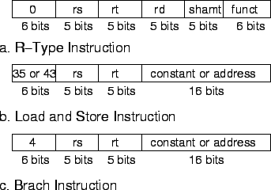
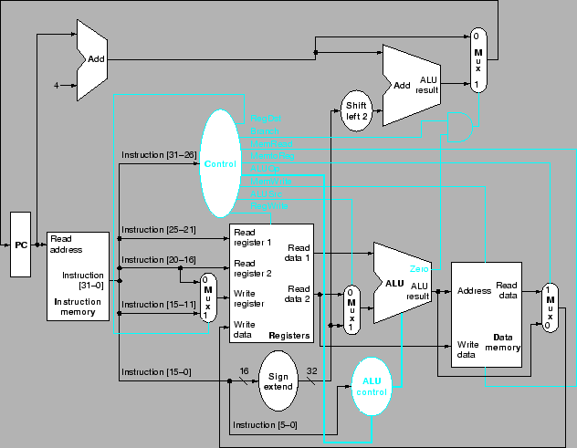
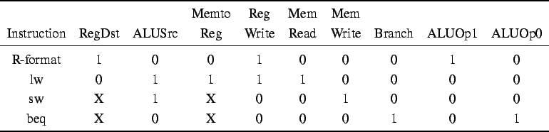

Next: การทำงานของเส้นทางข้อมูล
Up: การออกแบบสร้างโปรเซสเซอร์พื้นฐาน
Previous: ชุดควบคุม ALU
Contents
Index
หลังจากที่ได้อธิบายการควบคุมของ ALU สำหรับคำสั่งต่างๆ ที่ใช้ funct ฟิลด์ และประเภทของคำสั่งในการกำหนดสัญญาณควบคุม ในการควบคุมโปรเซสเซอร์ทั้งหมด เริ่มจากการพิจารณารูปแบบของคำสั่งต่างๆ ได้แก่ R-Type lw/sw และ Branch ซึ่งต้องเข้าใจการทำงานของฟิลด์ต่างๆ ที่จะสามารถส่งสัญญาณควบคุมได้ถูกต้อง
Figure 5.17:
รูปแบบของคำสั่ง R-Type, load-store, และ Branch
|

|
จากรูปแบบของคำสั่ง มีข้อสังเกตดังต่อไปนี้
- ฟิลด์ opcode อยู่ในบิต 31-26 โดยทุกคำสั่งอยู่ตำแหน่งเดียวกัน และเรียกว่า OP[5:0]
- คำสั่งที่มีการอ่านรีจีสเตอร์ ระบุค่ารีจีสเตอร์อยู่ในฟิลด์ rs และ rt ที่บิต 25:21 และ 20:16 ตามลำดับ ซึ่งครอบคลุมทั้ง R-Type, Branch, Load และ Store
- ค่าของ Base Register อยู่ในตำแหน่ง rs ที่บิต 25:21
- ค่า Offset 16 บิตสำหรับทำ Offset สำหรับการทำ Branch, Load, หรือ Store อยู่ในตำแหน่งเดียวกันที่บิต 15:0
- ค่า Destination Register อยู่ที่ rt (20:16) สำหรับคำสั่ง Load และอยู่ที่ rd (15:11) สำหรับคำสสั่ง R-Type
จากข้อมูลขั้นต้น เราสามารถเขียนกำหนดรายละเอียดของคำสั่ง และเพิ่ม Multiplexer เข้ากับ Datapath ที่แสดงก่อนหน้า
รูป 5.18 แสดงการเพิ่มส่วนประกอบดังกล่าว อีกทั้งสัญญาณควบคุมที่เกี่ยวข้อง ในส่วนของชุดควบคุม มีสัญาณควบคุมทั้งสิ้น 7 เส้น รวมกับ ALUOp อีกสองเส้น โดยมีรายละเอียดดัวนี้
- RegDst: select Destination Register
- RegWrite: write register
- ALUSrc: select ALU source
- PCSrc: select PC Source (for branch)
- MemRead: read memory
- MemWrite: write control for memory
- MemtoReg: select memory or alu to register
Figure 5.18:
เส้นทางข้อมูลสำหรับโปรเซสเซอร์ MIPS โดยมี Multiplexer และ สัญญาณควบคุมที่จำเป็น
|
|
Figure 5.19:
เส้นทางข้อมูลสำหรับโปรเซสเซอร์ MIPS ที่ประกอบกับชุดควบคุม
|

|
รูป 5.19 แสดงเส้นทางข้อมูลสำหรับโปรเซสเซอร์ MIPS ที่ประกอบกับชุดควบคุม เราสามารถเขียน
Truth Table สำหรับชุดควบคุมได้ในรูปที่ 5.20
Figure 5.20:
Truth Table สำหรับชุดควบคุมโปรเซสเซอร์ MIPS
|  |
Next: การทำงานของเส้นทางข้อมูล
Up: การออกแบบสร้างโปรเซสเซอร์พื้นฐาน
Previous: ชุดควบคุม ALU
Contents
Index
Vara Varavithya
2006-11-06
![\includegraphics[width=5.5in]{fig/Chapter_5/Figure_5.15.eps}](img302.png)